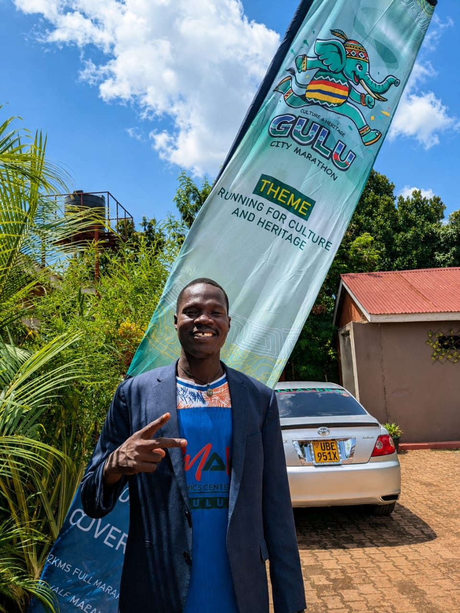

Client Centred Approach
Seven steps, from a first conversation to a finished product.
-
01
Consultation
We listen to your needs, your objectives, your target audience, your preferred style and your budget.
-
02
Concept Development
Our creative team develops ideas that respond directly to what you have asked for.
-
03
Design and Production Planning
We prepare artwork and choose the materials, technology and production process that fit the job.
-
04
Client Review
Where it applies, you review and approve the design before we move to production.
-
05
Production
Approved work is produced using the right equipment and professional technique.
-
06
Quality Control
Finished work is checked against the standard we hold ourselves to.
-
07
Finishing and Delivery
Your product is professionally finished, packaged and delivered or collected as agreed.
Staying In Touch
Clear communication, at every step.
We update you as your project moves through the seven steps, especially at the client review stage, so nothing goes into production without your sign off. You should never have to chase us to find out where things stand.
Realistic Timelines
Deadlines we actually agree on, and stick to.
At the consultation stage we set a timeline that reflects the real scope of the job. If anything changes along the way, we tell you as soon as we know, not after the deadline has already passed.

Consistent, Not Rushed
The same seven steps, whether it is one banner or a full campaign.
Following a set process keeps quality consistent and keeps you informed. You always know what stage your project is at and what happens next.
Common Questions
Questions we hear about how we work.
Can I bring my own design?
Yes, and it happens more often than you'd think. If you already have artwork or a rough concept, we can refine it, prepare it for production, or build on it. You do not have to start from zero.
What if my project is urgent?
Tell us your deadline at the consultation stage. Where the job allows it, we prioritise turnaround without cutting corners on quality.
Do you handle small, one off orders?
Yes. The same seven step process applies whether you need one banner, a single business card, or a full multi item campaign.
Why Choose Omalo Graphics Centre Ltd
Reasons clients keep coming back.
Advanced Technology
Modern and advanced equipment for professional production.
Five Years of Experience
Practical knowledge of the graphics and printing industry.
Professional Team
Creativity, technical competence and professionalism in every job.
Quality Assurance
Close attention to detail from design through to finishing.
Timely Delivery
A real commitment to the timelines we agree on.
Competitive Pricing
High quality services at rates that make sense.
One Stop Graphics Solution
Design, branding and printing services under one roof.
Customer Satisfaction
Relationships built on trust, communication and responsiveness.
Scalability
Comfortable handling a single personal order or a major institutional project.